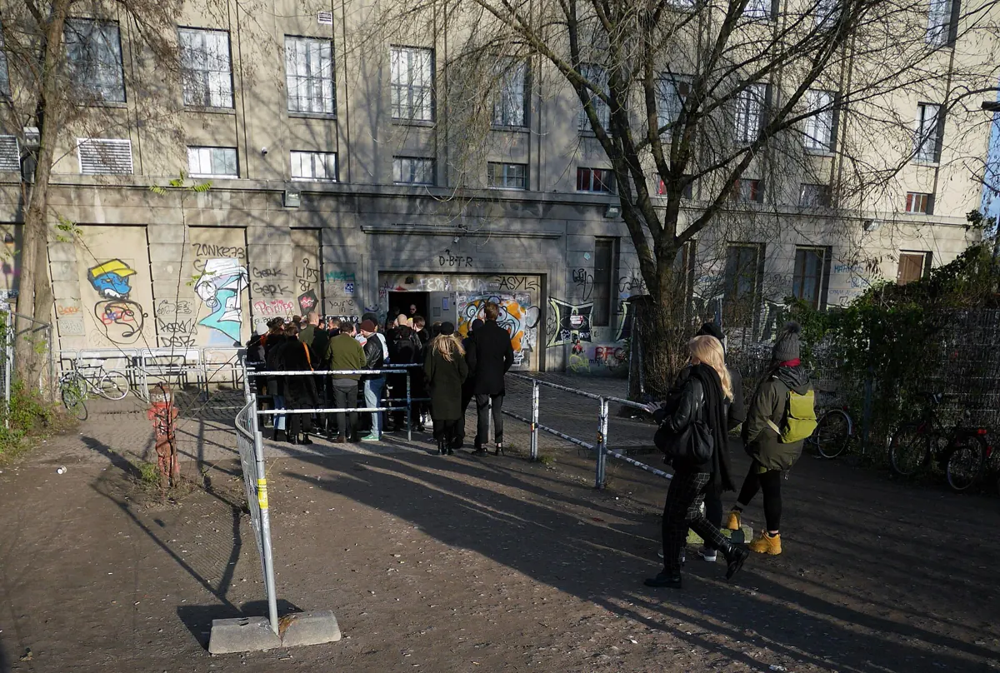
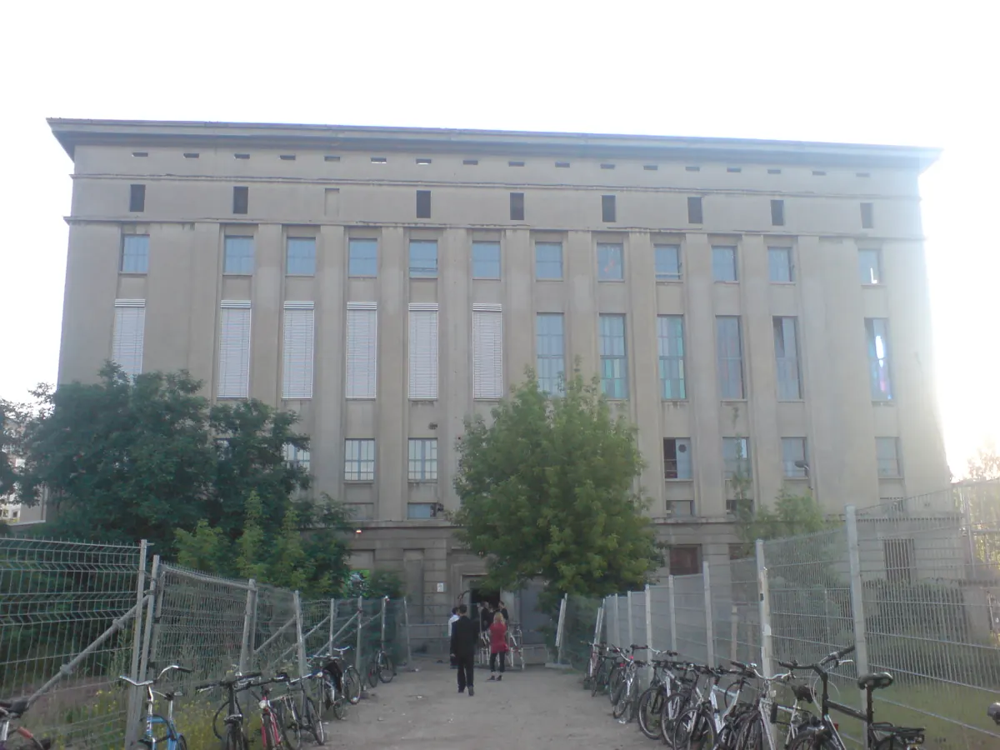
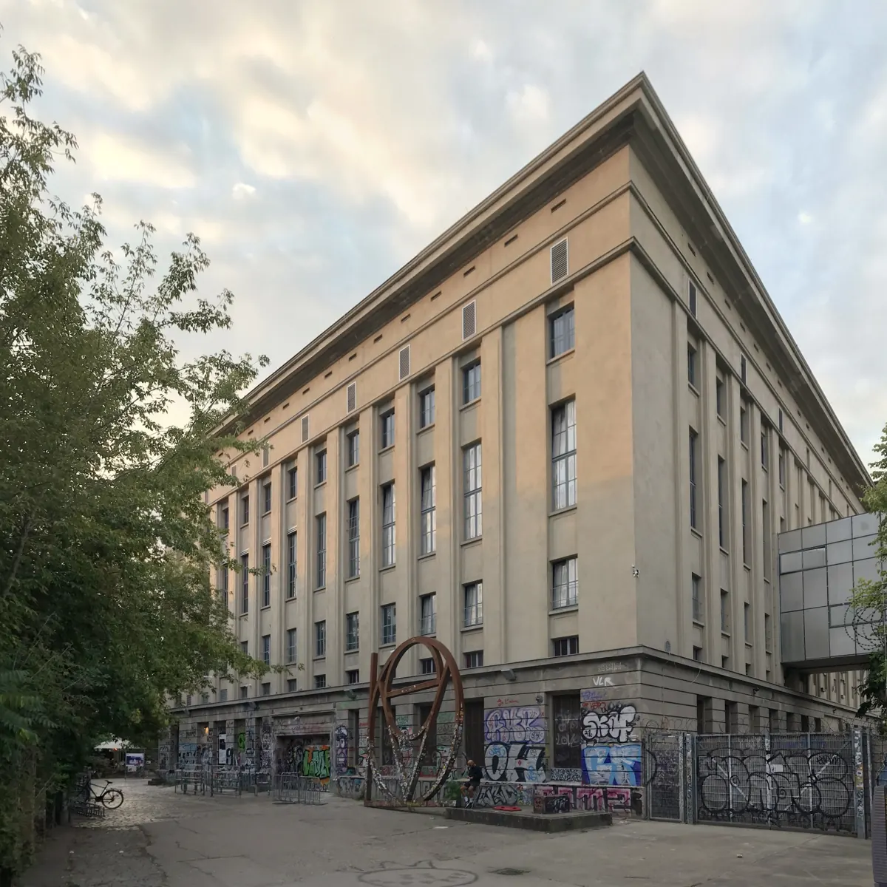

Club guide, Berlin
Berghain: Panorama Bar, sound and residents
The music, rooms and residents, with practical advice on choosing a night, tickets, the door and getting home.
Plan your visit
Berghain opening hours
Klubnacht usually starts at 23:59 on Saturday and continues through Sunday into Monday. Closing times vary. Concerts and other club nights have separate hours; check your chosen event in the official programme.
Berghain tickets and prices
Entry is 18+. Admission is not guaranteed.
Budget around €28–30 for Klubnacht entry, paid at the door. Special events can cost more. For concerts and other ticketed nights, check prices and advance booking in the official programme.
Free cold tap water is available in all restroom areas. For lost property, email lost@ostgut.de to arrange collection on Wednesday between 2 and 6 pm.
Berghain dress code
Berghain does not publish a formal dress code. Choose clothing and footwear you can comfortably dance and wait outside in. Treat outfit advice as personal experience, never as a guarantee of admission.
The Berghain queue
The official site gives no queue times and makes no promise about entry. A photograph from December 2019 shows how it looks from the street, with barriers marking the line outside the entrance.

Allow for a wait and have another plan if you are turned away. The club explicitly says admission is not guaranteed, including in its accessibility guidance. For ticketed concerts, read the conditions for that specific event. The Berlin club guide gives wider context and other venues to consider.
Accessibility and support inside
The club’s accessibility guidance describes a ground-level entrance, accessible toilets and a lift connecting all floors, operated with staff assistance. Ask the bar crew, runners or security for help moving between floors or reaching the toilets.
If a disability makes standing in the queue difficult, the club describes an arrangement for approaching the door directly with a German disability card showing a degree of disability of at least 50. A companion can enter free when the card carries the “B” marker. Admission is still not guaranteed. Contact support@berghain.de ahead of your visit about your own access requirements, including documentation issued outside Germany.
Getting there and getting home
The Berghain address is Am Wriezener Bahnhof, 10243 Berlin, and the official contact page names S-Ostbahnhof as the station. Open Google Maps for the walk to the door. Before leaving, check your actual departure time in the BVG journey planner, especially if your night continues into Monday morning.
A power station in Friedrichshain.
For a first visit, start with the music: compare the Berghain and Panorama Bar lineups, then decide which event fits your night. A concert in the Kantine and a weekend Klubnacht offer very different ways into the same complex.
The club is a former heating and power station. The Berliner Zentrum Industriekultur, a Berlin heritage body, dates the building to 1952 to 1955, in the neoclassical style of the East German blocks along Karl-Marx-Allee, and says the plant went off the grid in 1988. The conversion into a club ran until 2004. The Berlin monuments database lists the power station as part of a protected ensemble.

Berghain Berlin took over from an earlier club, Ostgut, near the same station. Crack dates Ostgut's first night to New Year's Day 1999 and says it closed in 2003. Berghain has been open in the old power station ever since, and the operator is Berghain OstGut GmbH, named in the official site's legal terms.
Inside, the Berliner Zentrum Industriekultur says the dance floor stands where generators and turbines used to run, under ceilings 18 metres high, and puts the capacity at up to 1,500 people. The architects' own project page describes a foyer dominated by a wall-sized installation by Piotr Nathan, made of 175 aluminium panels.
Berghain sits alongside 22 other rooms in the best clubs in Europe guide.
What is Panorama Bar?
Panorama Bar is the second floor, up steel stairs from the main room. The Berliner Zentrum Industriekultur says it occupies the former control room, and the architects' project page describes a raw room with a central bar lined in black rubber, two large photographs by Wolfgang Tillmans on its walls, and seating made from concrete pipes that weigh 1,462 kilograms each.
Musically Berghain Panorama Bar is the house floor. Groove, in an obituary for the club's booking agency in 2022, calls it an eclectic answer to the stricter main room and names its early residents: Tama Sumo, Boris, nd_baumecker and Nick Höppner, plus Prosumer, with a link to American house and disco history and to queer party traditions. For the music itself, see the house music guide.
Panorama Bar also hosts standalone club nights. On Klubnacht weekends it has its own lineup alongside the main room. The programme shows which floors open for each event.
What is Halle am Berghain?
Halle am Berghain is the former boiler house, and the Berliner Zentrum Industriekultur says it now hosts concerts and exhibitions outside club nights. The official site lists it as its own programme, separate from the club.

Exhibitions and concerts in the Halle have their own opening hours and tickets. Use the Halle programme to choose an event; a Klubnacht visit does not cover every activity in the building.
What is the Berghain Kantine?
The Berghain Kantine, officially Kantine am Berghain, is the venue’s concert room. Its programme covers live acts and occasional events that continue with DJs after the performance.
Check doors, performance times and ticket prices in the Kantine programme. The main Berghain room also hosts concerts, listed separately from Klubnacht.
Who plays Berghain?
For the next Berghain lineup, open the official programme. Each event lists its DJs and live acts by floor, so you can compare the main room with Panorama Bar before choosing a night.
The club publishes no list of Berghain resident DJs, so the Berghain DJ names here come from the press. Crack's 2017 interview calls Marcel Dettmann and Ben Klock resident DJs of Berghain and Panorama Bar. Groove's 2022 obituary adds Len Faki as a third main-room resident and says all three were mostly unknown when they were chosen.
To see what a Berghain lineup looks like in practice, I counted the Klubnacht listings in the official archive from 1 January to 3 October 2026. There were 41. Steffi, Virginia and nd_baumecker each appear on 6 of them. Ben Klock, Marcel Dettmann and Tama Sumo each appear on 4, Boris on 2, and Len Faki and Honey Dijon on 1 each. Groove reported a Honey Dijon residency in Panorama Bar in 2022. These are counts of listed names, not an official resident list, and a name can be listed and then change.
What does Berghain sound like?
The main room is known for Berghain techno, and the two DJs who defined it are the two the press names most. Crack's interview has Dettmann and Klock recalling the old Ostgut as a place with high ceilings, similar to the Berlin clubs they went to in the nineties, and describing the opening of Berghain in 2004 as something the city had been waiting for. Groove argues that their choice gave the club a current definition of techno that connected Berlin's nineties history to the 2000s. For the genre itself, see the techno music guide.
The Berghain sound system is the other half of that reputation. Mixmag reported on 18 October 2023 that the main room's original Funktion-One Dance Stack, installed in 2005, had been replaced after 18 years, and that it had run around 40 hours a week. The maker says the new system is technologically superior and keeps its exact specification private. Mixmag also writes that there has never been a Funktion-One system in Panorama Bar, only DJ monitors. Groove, reporting the same news, says the Panorama Bar system was replaced in 2017. These reports do not establish the current Panorama Bar system.
To hear the DJs the press names, the sets below are by Ben Klock, Len Faki, Prosumer and Tama Sumo. These Boiler Room Berlin recordings show how the DJs play; they are not presented as recordings from Berghain.
The label that grew out of the club is Ostgut Ton, linked from the official site. Its dates differ by source: Crack says the label began in 2005 and released its first vinyl in 2006, while Groove dates the first release to 2003. Resident Advisor reported in 2010 that Ben Klock had mixed Berghain 04, the next release in the label's mix series, which also has a Panorama Bar side.
Berghain FAQ.
Berghain history: when did the club open?
The building was a power station from 1952 to 1955 and shut down in 1988. It has been a club since 2004, after a conversion that ran until then. Its predecessor Ostgut opened, according to Crack, on New Year's Day 1999 and closed in 2003.
What is a Berghain party like?
The Berghain party the official site lists most often is Klubnacht, from 23:59 on Saturday, with the main room, Panorama Bar and Säule all running, and in the warm months the garden too. Panorama Bar also runs label nights on Fridays from 22:00 and Säule runs Thursday nights from 22:00. Entry is 18 and over.
Is there a Berghain garden?
Yes. The Garten is an outdoor floor used in the warmer months. Check the programme to see whether it opens during your chosen event.
What is the Berghain closing time?
Klubnacht continues through Sunday into Monday, with no fixed closing time. Check the official programme for your chosen event.
Does the Berghain dress code matter?
Berghain does not publish a formal dress code. Comfortable clothing and shoes are practical for dancing and waiting outside; an outfit does not guarantee admission.
Sources.
- Programme, floors, prices, hours, address and house information: berghain.berlin, its programme, Kantine programme, Halle programme, contact page, awareness page and the 2026 programme archive.
- Building history, former uses of each space and capacity: Berliner Zentrum Industriekultur. Monument listing: Landesdenkmalamt Berlin, Denkmaldatenbank, object 09085197.
- Interior, foyer installation and Panorama Bar fittings: Karhard architects, Berghain project page.
- Ostgut dates and the residents: Crack, Marcel Dettmann and Ben Klock interviewed, 2017 and Groove, obituary for Ostgut Booking, 2022.
- Sound system: Mixmag, 18 October 2023 and Groove, 23 October 2023. Mix series: Resident Advisor, 26 April 2010.
Continue reading
Read next.
 Rave spots~11 min read
Rave spots~11 min readBest Clubs in NYC: Nightclubs for House and Techno, Then and Now
Nowadays, Basement, Public Records, Good Room and Elsewhere: the best clubs in NYC for house and techno now, and the history from the Loft to Output.
Read article → Rave spots~7 min read
Rave spots~7 min readBest Clubs in Tokyo: WOMB, Contact and the Ban on Dancing
WOMB, Contact, Vent and Circus Tokyo: the best clubs in Tokyo for house, techno and bass music, and the 68-year law against dancing that shaped them.
Read article → Rave spots~6 min read
Rave spots~6 min readBest Clubs in Budapest: A38, Instant-Fogas and Turbina
A38's converted cargo ship, the seven rooms of Instant-Fogas and Turbina's techno nights: the best clubs in Budapest now, and the ruin bars several grew out of.
Read article → Rave spots~6 min read
Rave spots~6 min readBest Clubs in Prague: Cross Club, Karlovy Lázně and Ankali
Cross Club's salvaged machinery, Karlovy Lázně's five floors and Ankali's techno nights: the best clubs in Prague, mainstream and underground.
Read article →